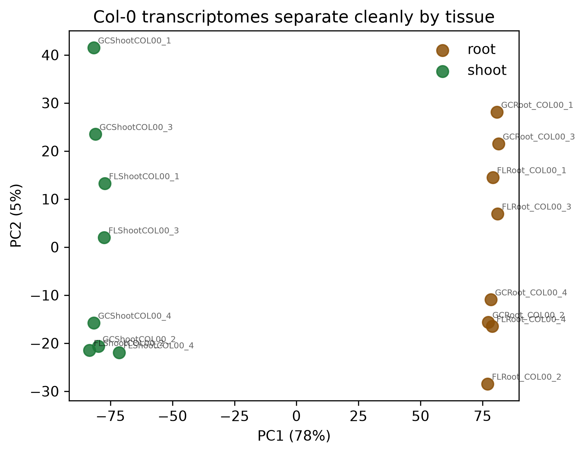
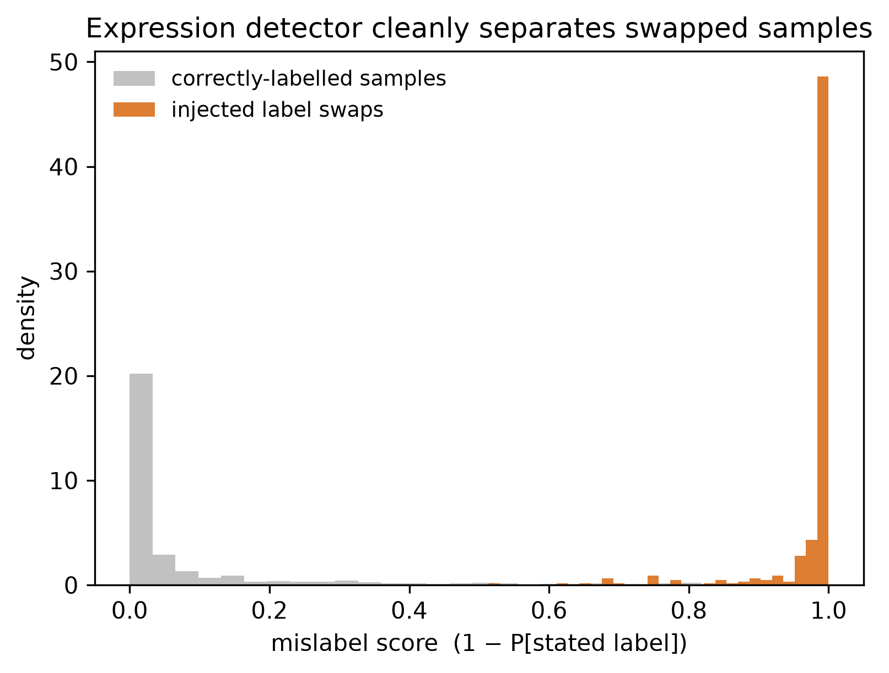
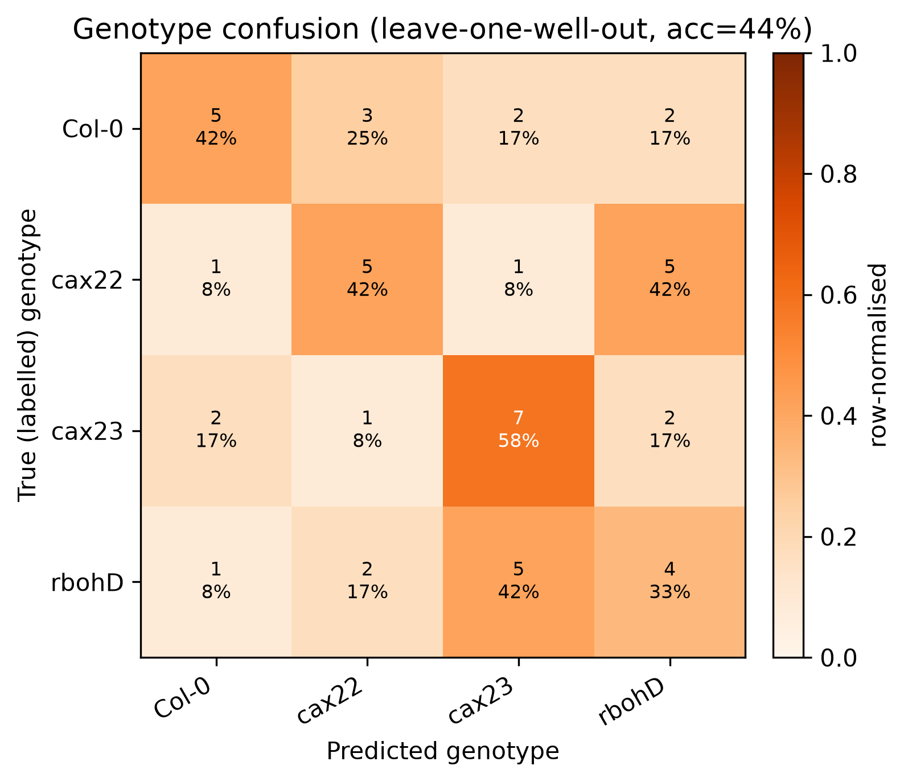
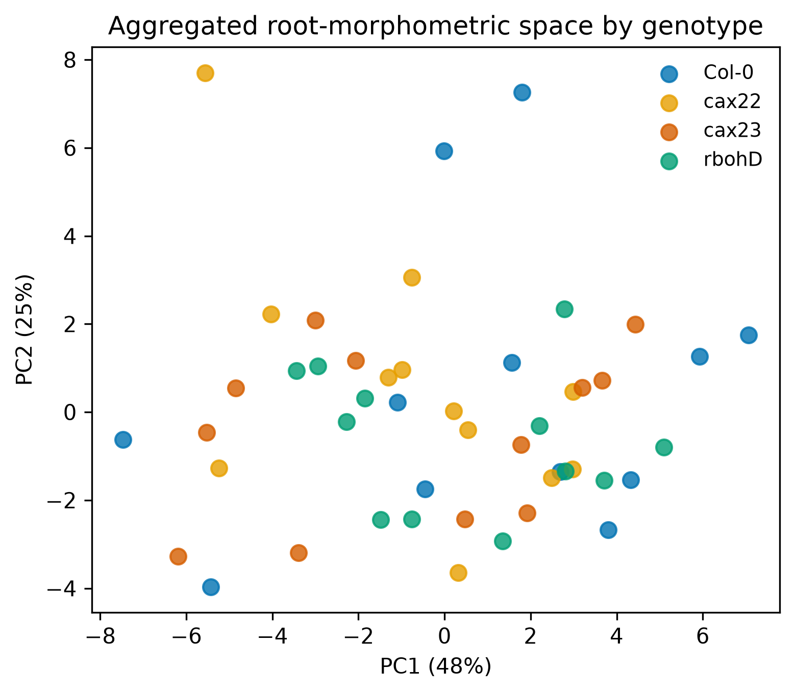
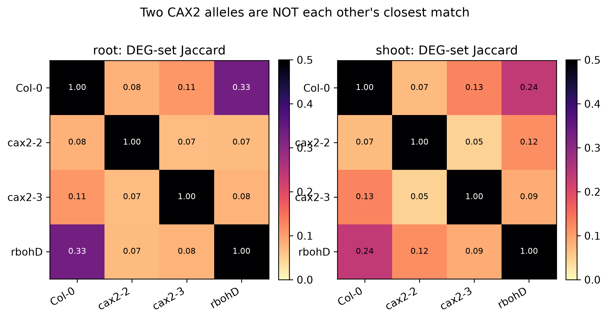
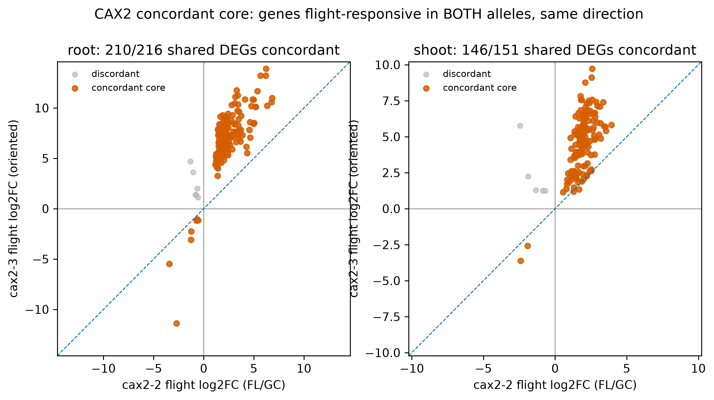

Figures
Main machine-learning QC and CAX2 analysis figures. Full legends are in the manuscript.









Main machine-learning QC and CAX2 analysis figures. Full legends are in the manuscript.





